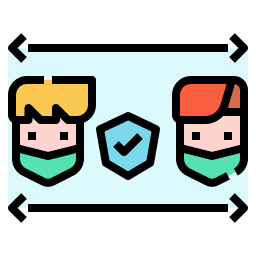
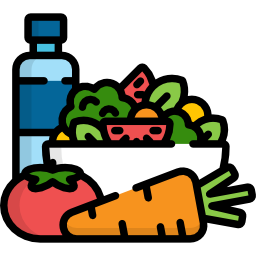
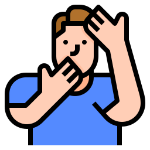
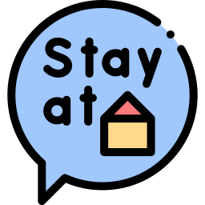

Wash your hands with water and soap. Let me see that lather

When coughing or sneezing, cover mouth and nose with the inner part of your elbow or some tissue

If you really do have to go outside, keep social distance with everyone, 6 feet back bro!

Avoid travel if you have symptoms, I mean, do not travel at all. These are not vacations

We are what we eat. While you are in lockdown, eat as healthy as you can

I know, I know, you are so handsome you can not keep yours hands off you. But please, do not touch your eyes, nose and mouth

Stay at home, is the only thing you can control